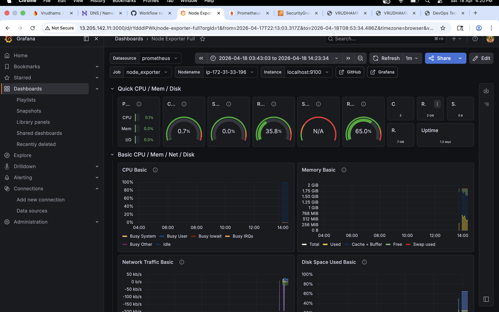
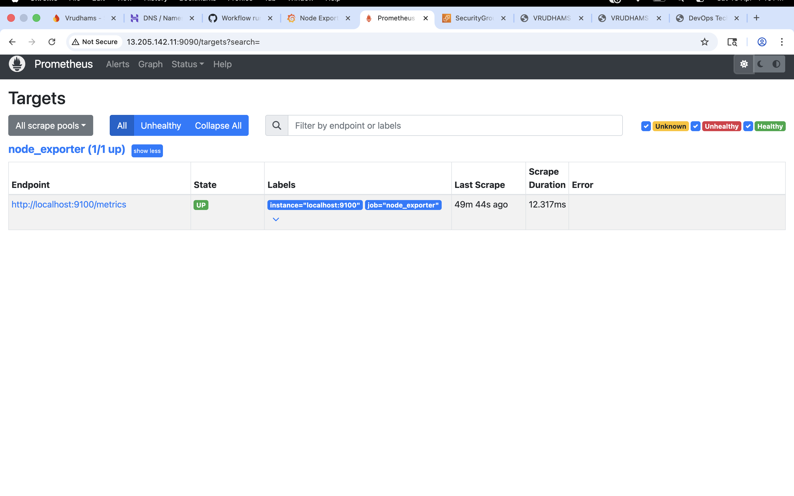

📌 Project Overview
This project demonstrates a complete DevOps lifecycle including CI/CD automation, Docker containerization, reverse proxy setup using Nginx, and real-time monitoring using Prometheus and Grafana deployed on AWS EC2.
⚙️ Tech Stack Used
AWS EC2 Docker Nginx GitHub Actions Jenkins Linux Ubuntu Node Exporter Prometheus Grafana CI/CD Pipeline🏗️ Architecture Flow
GitHub Repo
↓
CI/CD Pipeline (GitHub Actions / Jenkins)
↓
AWS EC2 Server
↓
Docker Container
↓
Nginx Reverse Proxy
↓
Live Application (Domain + HTTPS)
Monitoring Layer:
Node Exporter → Prometheus → Grafana
🌐 Live Services
Application: https://devopsproject.online
Prometheus: http://13.205.142.11:9090
Grafana: http://13.205.142.11:3000
📸 Screenshots
Grafana Dashboard

Prometheus Targets

Nginx + HTTPS Deployment

EC2 Deployment

🧠 Key Learnings
- Cloud deployment on AWS EC2
- Docker containerization
- CI/CD automation pipelines
- Nginx reverse proxy setup
- Real-time monitoring using Prometheus & Grafana